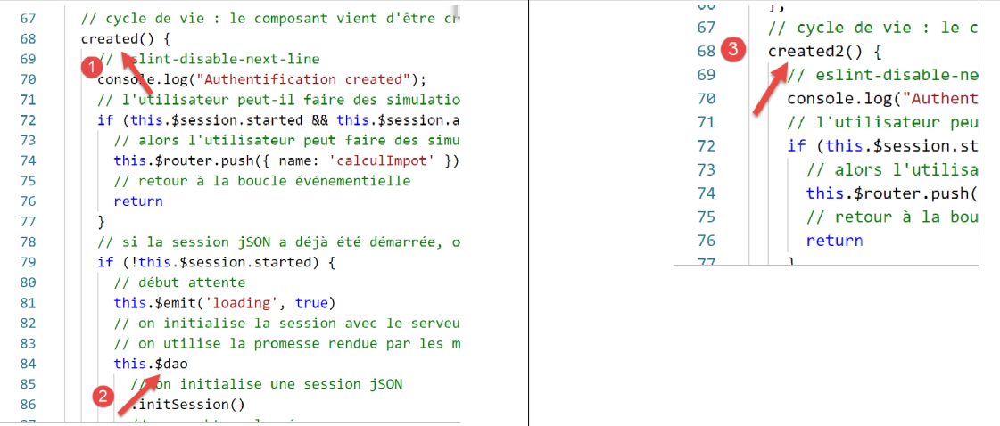
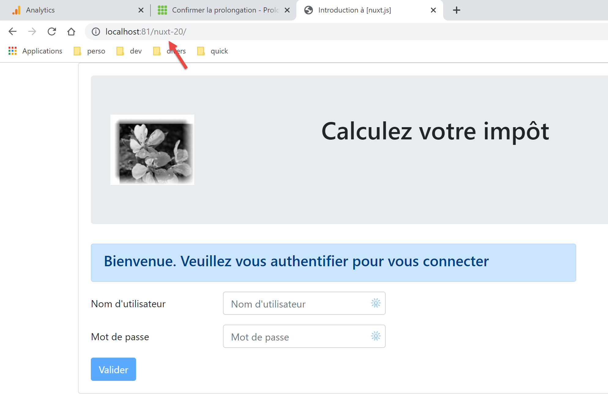
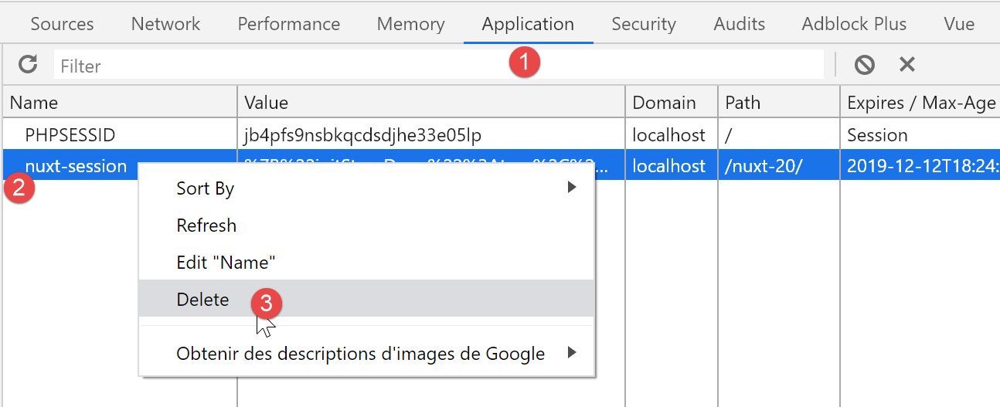
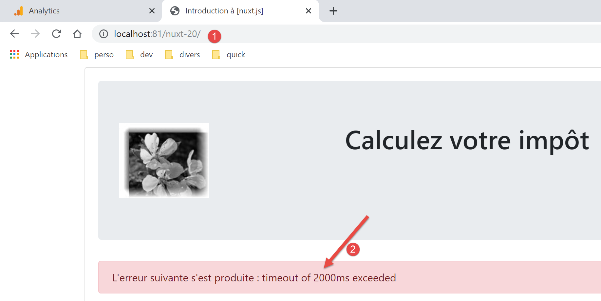
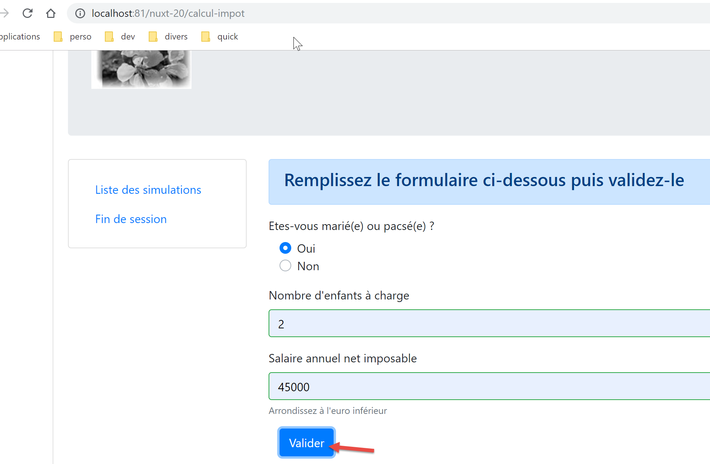
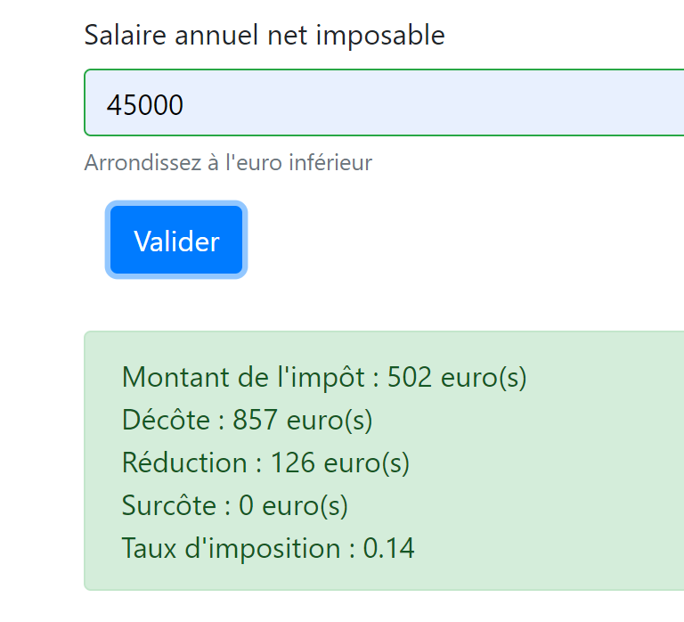
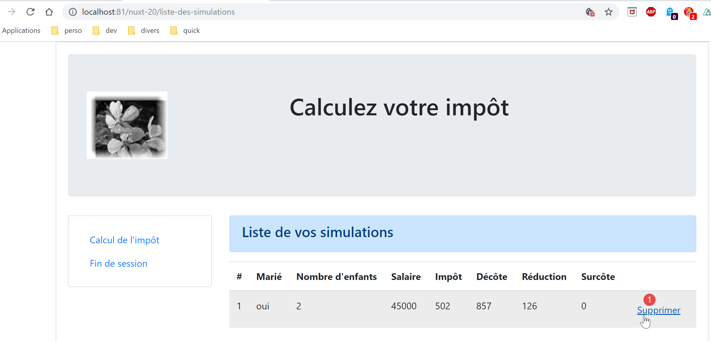
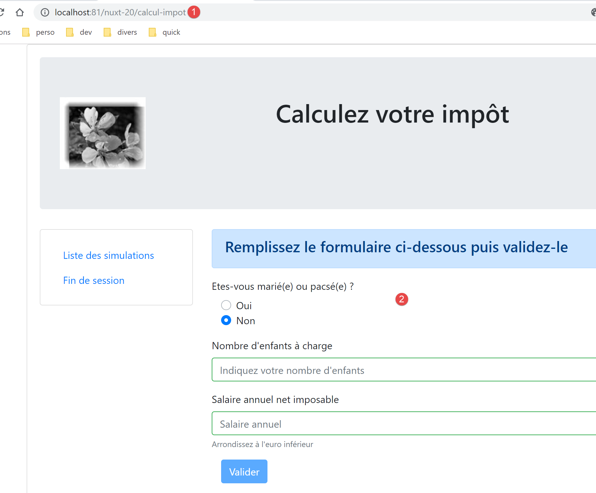
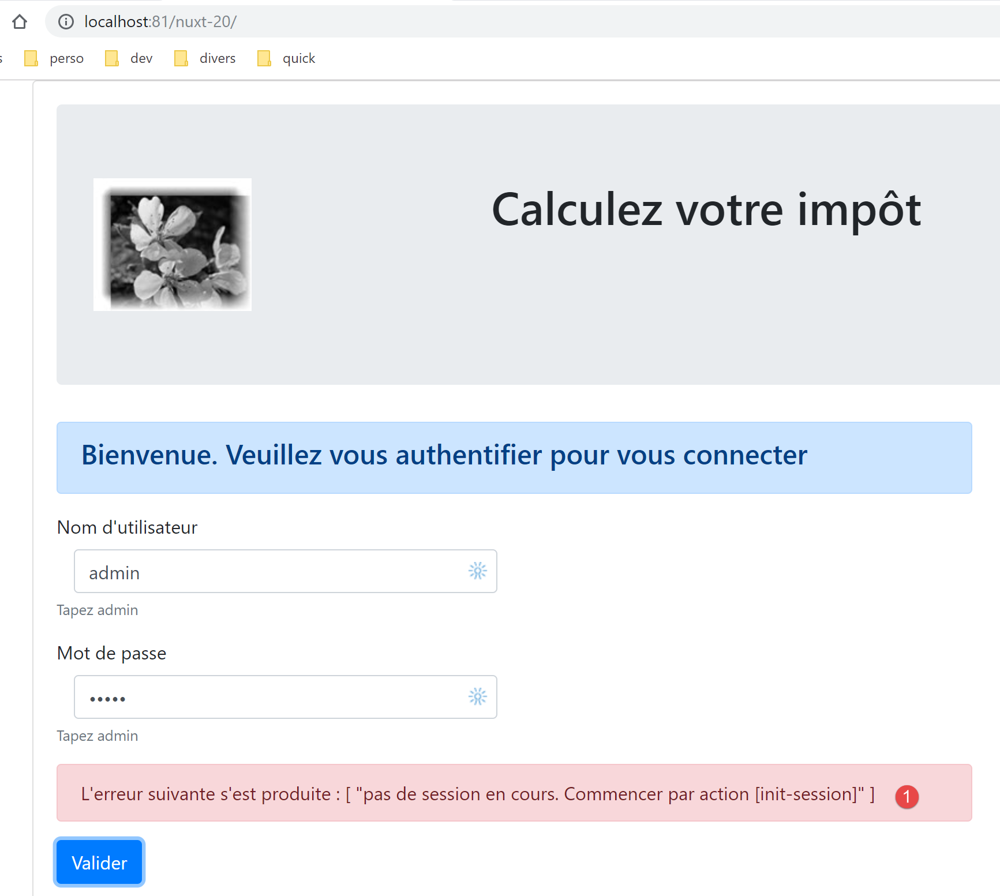
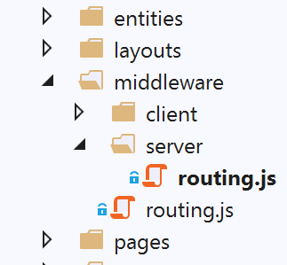

17. Esempio [nuxt-20]: adattamento dell’esempio [vuejs-22]
17.1. Présentation
In questa sede ci proponiamo di trasferire l’esempio [vuejs-22], che era un’applicazione [vue.js] di tipo SPA, in un contesto [nuxt] SSR. [vuejs-22] era un’applicazione client del server di calcolo delle imposte che presentava le seguenti schermate:
La prima schermata è quella di autenticazione:

La seconda schermata è quella del calcolo delle imposte:

La terza schermata è quella che mostra l’elenco delle simulazioni effettuate dall’utente:

La schermata sopra mostra che è possibile eliminare la simulazione n. 1. Si ottiene quindi la seguente schermata:

Se ora si elimina l’ultima simulazione, si ottiene la seguente nuova schermata:

Passeremo gradualmente dall’applicazione [vuejs-22] all’applicazione [nuxt-20]. Non spiegheremo nuovamente i codici di [vuejs-22]. Si invita il lettore a rileggere il documento |Introduzione al framework VUE.JS attraverso un esempio|. Le diverse fasi dovrebbero illustrare le differenze tra un’applicazione [vuejs] e un’applicazione [nuxt].
17.2. Fase 1
Il progetto [nuxt-20] viene inizialmente ottenuto copiando il progetto [nuxt-12]. Quest’ultimo rappresenta infatti un buon punto di partenza:
- è in grado di comunicare con il server di calcolo delle imposte;
- gestisce correttamente gli errori che quest’ultimo invia;
- il client e il server [nuxt] sono in grado di comunicare tramite una sessione [nuxt];
Abbiamo quindi una buona infrastruttura di partenza. Il nostro compito principale dovrebbe essere quello di modificare:
- le pagine. Prenderemo quelle del progetto [vuejs-22], che dovranno essere adattate al nuovo ambiente;
- la gestione dello store. Dovrebbero comparire informazioni aggiuntive (elenco delle simulazioni) mentre altre potrebbero diventare superflue;
- la gestione del routing del client e del server [nuxt];
Quindi, per prima cosa, creiamo il progetto [nuxt-20] copiando il progetto [nuxt-12]:

Quindi si eliminano le pagine e i componenti ormai superflui [2]:
- il componente [components/navigation] scompare;
- il layout [layout/default] scompare;
- le pagine [index, authentification, get-admindata, fin-session] scompaiono;
Quindi si integrano in [nuxt-20] gli elementi di [vuejs-22] e [3]:
- le tre pagine [Authentification, CalculImpot, ListeSimulations] dell’applicazione [vuejs-22] vengono spostate nella cartella [pages];
- i componenti [FormCalculImpot, Menu, Layout] dell’applicazione [vuejs-22] vanno nella cartella [components];
- la pagina [Main] di [vuejs-22], che fungeva da [layout] per l’applicazione [vuejs-22], va nella cartella [layouts];
Si rinominano gli elementi integrati [4]:

- in [layouts], [Main] è diventato [default] poiché è il nome predefinito del layout di un'applicazione [nuxt];
- in [pages], la pagina [Authentification] è diventata [index], poiché [Authentification] ricopriva tale ruolo nell’applicazione [vuejs-22];
A questo punto, è possibile compilare il progetto per individuare i primi errori. Modifichiamo il file [nuxt.config] dell’esempio [nuxt-12] in modo che ora venga eseguito [nuxt-20]:
export default {
mode: 'universal',
/*
** Headers of the page
*/
head: {
title: 'Introduction à [nuxt.js]',
meta: [
{ charset: 'utf-8' },
{ name: 'viewport', content: 'width=device-width, initial-scale=1' },
{
hid: 'description',
name: 'description',
content: 'ssr routing loading asyncdata middleware plugins store'
}
],
link: [{ rel: 'icon', type: 'image/x-icon', href: '/favicon.ico' }]
},
/*
** Customize the progress-bar color
*/
loading: false,
/*
** Global CSS
*/
css: [],
/*
** Plugins to load before mounting the App
*/
plugins: [
{ src: '@/plugins/client/plgSession', mode: 'client' },
{ src: '@/plugins/server/plgSession', mode: 'server' },
{ src: '@/plugins/client/plgDao', mode: 'client' },
{ src: '@/plugins/server/plgDao', mode: 'server' },
{ src: '@/plugins/client/plgEventBus', mode: 'client' }
],
/*
** Nuxt.js dev-modules
*/
buildModules: [
// Doc: https://github.com/nuxt-community/eslint-module
'@nuxtjs/eslint-module'
],
/*
** Nuxt.js modules
*/
modules: [
// Doc: https://bootstrap-vue.js.org
'bootstrap-vue/nuxt',
// Doc: https://axios.nuxtjs.org/usage
'@nuxtjs/axios',
// https://www.npmjs.com/package/cookie-universal-nuxt
'cookie-universal-nuxt'
],
/*
** Axios module configuration
** See https://axios.nuxtjs.org/options
*/
axios: {},
/*
** Build configuration
*/
build: {
/*
** You can extend webpack config here
*/
extend(config, ctx) {}
},
// directory del codice sorgente
srcDir: 'nuxt-20',
// router
router: {
// radice dell'applicazione URL
base: '/nuxt-20/',
// middleware di routing
middleware: ['routing']
},
// server
server: {
// porta di servizio, 3000 per impostazione predefinita
port: 81,
// indirizzi di rete in ascolto, per impostazione predefinita localhost: 127.0.0.1
// 0.0.0.0 = tutti gli indirizzi di rete del computer
host: 'localhost'
},
// ambiente
env: {
// configurazione di Axios
timeout: 2000,
withCredentials: true,
baseURL: 'http://localhost/php7/scripts-web/impots/version-14',
// configurazione del cookie di sessione [nuxt]
maxAge: 60 * 5
}
}
Si esegue quindi un [build] del progetto:

Gli errori segnalati sono i seguenti:
- l’errore alla riga 1 indica che si fa riferimento a un’immagine inesistente. La recupereremo in [vuejs-22];
- l’errore alla riga 2 indica che il componente [./FormCalculImpot] non esiste. Effettivamente, tale componente si trova ora in [@/components/form-calcul-impot];
- gli errori nelle righe relative a [3-5] indicano che il componente [./Layout] non esiste. In effetti, tale componente si trova ora in [@/components/layout];
- gli errori nelle righe [6-7] indicano che il componente [./Menu] non esiste. Effettivamente, ora si chiama [@/components/menu];
Si aggiunge l’immagine [assets/logo.jpg] al progetto [nuxt-20]:

Inoltre, in tutte le pagine correggeremo il percorso dei componenti. Prendiamo ad esempio la pagina [calcul-impot]:
<!-- definizione HTML della vista -->
<template>
<div>
<Layout :left="true" :right="true">
<!-- modulo di calcolo delle imposte a destra -->
<FormCalculImpot slot="right" @resultatObtenu="handleResultatObtenu" />
<!-- menu di navigazione a sinistra -->
<Menu slot="left" :options="options" />
</Layout>
<!-- area di visualizzazione dei risultati del calcolo dell'imposta sotto il modulo -->
<b-row v-if="résultatObtenu" class="mt-3">
<!-- area vuota a tre colonne -->
<b-col sm="3" />
<!-- area a nove colonne -->
<b-col sm="9">
<b-alert show variant="success">
<span v-html="résultat"></span>
</b-alert>
</b-col>
</b-row>
</div>
</template>
<script>
// importazioni
import FormCalculImpot from './FormCalculImpot'
import Menu from './Menu'
import Layout from './Layout'
export default {
// componenti utilizzati
components: {
Layout,
FormCalculImpot,
Menu
},
I tre [import] delle righe 26-28 diventano:
// importazioni
import FormCalculImpot from '@/components/form-calcul-impot'
import Menu from '@/components/menu'
import Layout from '@/components/layout'
In questo modo si verificano ed eventualmente si correggono i [import] di tutti i componenti, i layout e le pagine. Una volta apportate queste correzioni, è possibile tentare un nuovo [build]. Normalmente non ci dovrebbero più essere errori.
A questo punto è possibile tentare l’esecuzione:

Compaiono degli errori:
Si nota che il comando [dev], combinato con il modulo [eslint], è più rigoroso, dal punto di vista sintattico, rispetto al comando [build]. In questo caso, richiede che l’operatore di confronto [!=] sia scritto [!==], che è un operatore più rigoroso (verifica anche il tipo degli operandi). Questi errori si verificano nella pagina [index.vue].
Si correggono gli errori sopra indicati e si riavvia l’esecuzione del progetto. Si riceve quindi un avviso dal modulo [eslint]:

Si corregge questo errore con il modulo [Quick fix] dei moduli [eslint] e [2].
Si riavvia l'esecuzione del progetto. Non si verificano più errori di compilazione. Si richiama quindi il file URL [http://localhost:81/nuxt-20/] con un browser. Si ottiene un errore di esecuzione:

L’errore si trova in [index.vue] [2]. L’errore [1] deriva dal fatto che in [vuejs-22], il livello [dao] era disponibile in [this.$dao], mentre in [nuxt-12], di cui abbiamo adottato l’infrastruttura, è disponibile nella funzione [this.$dao()].
L’errore si trova nella funzione [created] del ciclo di vita della pagina [index]:

Per il momento, ci limitiamo a rinominare [created] in [created2] affinché la funzione del ciclo di vita [created] non venga eseguita [3].
Si salva la modifica e si ricarica la pagina [index] nel browser. Questa volta funziona:

17.3. Fase 2
Le pagine del progetto [vuejs-22] utilizzavano i seguenti elementi inseriti:
- $dao: per il livello [dao] del client [vue.js];
- $session: per una sessione memorizzata nel [localStorage] del browser;
Questi elementi non esistono più nell’infrastruttura del progetto [nuxt-12] che abbiamo ricopiato:
- ora ci sono due livelli [dao], uno per il client [nuxt] e l’altro per il server [nuxt]. Entrambi sono disponibili tramite una funzione iniettata denominata [$dao]. Ciò significa che nelle pagine dell’applicazione [this.$dao] deve essere sostituito con [this.$dao()];
- la sessione [nuxt] gestita dall’applicazione [nuxt-20] non ha più nulla a che vedere con l’oggetto [$session] dell’applicazione [vuejs-22], in cui non esisteva il concetto di cookie di sessione. Tuttavia, entrambe hanno una funzionalità analoga: memorizzare informazioni persistenti nel corso delle azioni dell’utente. La sessione [nuxt] memorizza le informazioni nello store anziché direttamente nella sessione. Nelle pagine dell’applicazione, [this.$session] deve essere sostituito con [this.$store] quando si tratta di memorizzare informazioni nella sessione e con [this.$session()] quando si tratta di gestire la sessione stessa;
- per conoscere lo stato di una proprietà P dello store, occorre scrivere [this.$store.state.P];
- per modificare la proprietà P dello store, occorre scrivere [this.$store.commit(‘replace’, {P:value}];
Effettuiamo queste modifiche nella pagina [index]:
<!-- definizione HTML della vista -->
<template>
<Layout :left="false" :right="true">
<template slot="right">
<!-- modulo HTML - i valori vengono inseriti tramite l'azione [authentifier-utilisateur] -->
<b-form @submit.prevent="login">
<!-- titolo -->
<b-alert show variant="primary">
<h4>Bienvenue. Veuillez vous authentifier pour vous connecter</h4>
</b-alert>
<!-- prima riga -->
<b-form-group label="Nom d'utilisateur" label-for="user" label-cols="3">
<!-- campo di immissione utente -->
<b-col cols="6">
<b-form-input id="user" v-model="user" type="text" placeholder="Nom d'utilisateur" />
</b-col>
</b-form-group>
<!-- seconda riga -->
<b-form-group label="Mot de passe" label-for="password" label-cols="3">
<!-- campo di inserimento password -->
<b-col cols="6">
<b-input id="password" v-model="password" type="password" placeholder="Mot de passe" />
</b-col>
</b-form-group>
<!-- terza riga -->
<b-alert v-if="showError" show variant="danger" class="mt-3">L'erreur suivante s'est produite : {{ message }}</b-alert>
<!-- pulsante di tipo [submit] sulla terza riga -->
<b-row>
<b-col cols="2">
<b-button :disabled="!valid" variant="primary" type="submit">Valider</b-button>
</b-col>
</b-row>
</b-form>
</template>
</Layout>
</template>
<!-- dinamica della vista -->
<script>
/* eslint-disable no-console */
import Layout from '@/components/layout'
export default {
// componenti utilizzati
components: {
Layout
},
// stato del componente
data() {
return {
// utente
user: '',
// la sua password
password: '',
// controlla la visualizzazione di un messaggio di errore
showError: false,
// il messaggio di errore
message: ''
}
},
// proprietà calcolate
computed: {
// immissioni valide
valid() {
return this.user && this.password && this.$store.state.started
}
},
// ciclo di vita: il componente è stato appena creato
mounted() {
// eslint-disable-next-line
console.log("Authentification mounted");
// L'utente può eseguire simulazioni?
if (this.$store.state.started && this.$store.state.authenticated && this.$métier.taxAdminData) {
// allora l'utente può eseguire simulazioni
this.$router.push({ name: 'calculImpot' })
// ritorno al ciclo degli eventi
return
}
// se la sessione jSON è già stata avviata, non viene riavviata
if (!this.$store.state.started) {
// inizio attesa
this.$emit('loading', true)
// si inizializza la sessione con il server - richiesta asincrona
// si utilizza la promessa restituita dai metodi del livello [dao]
this.$dao()
// si inizializza una sessione jSON
.initSession()
// si è ottenuta la risposta
.then((response) => {
// fine attesa
this.$emit('loading', false)
// analisi della risposta
if (response.état !== 700) {
// viene visualizzato l'errore
this.message = response.réponse
this.showError = true
// ritorno al ciclo degli eventi
return
}
// la sessione è stata avviata
this.$store.commit('replace', { started: true })
console.log('[authentification], session=', this.$session())
})
// in caso di errore
.catch((error) => {
// l'errore viene segnalato alla vista [Main]
this.$emit('error', error)
})
// in ogni caso
.finally(() => {
// si salva la sessione
this.$session().save()
})
}
},
// gestori di eventi
methods: {
// ----------- autenticazione
async login() {
try {
// inizio attesa
this.$emit('loading', true)
// non si è ancora effettuato l'autenticazione
this.$store.commit('replace', { authenticated: false })
// autenticazione bloccante presso il server
const response = await this.$dao().authentifierUtilisateur(this.user, this.password)
// fine del caricamento
this.$emit('loading', false)
// analisi della risposta del server
if (response.état !== 200) {
// viene visualizzato l'errore
this.message = response.réponse
this.showError = true
// ritorno al ciclo degli eventi
return
}
// nessun errore
this.showError = false
// autenticazione riuscita
this.$store.commit('replace', { authenticated: true })
// --------- ora si richiedono i dati dell'amministrazione fiscale
// inizialmente, nessun dato
this.$métier.setTaxAdminData(null)
// inizio attesa
this.$emit('loading', true)
// richiesta in sospeso presso il server
const response2 = await this.$dao().getAdminData()
// fine del caricamento
this.$emit('loading', false)
// analisi della risposta
if (response2.état !== 1000) {
// viene visualizzato l'errore
this.message = response2.réponse
this.showError = true
// ritorno al ciclo degli eventi
return
}
// nessun errore
this.showError = false
// i dati ricevuti vengono memorizzati nel livello [métier]
this.$métier.setTaxAdminData(response2.réponse)
// è possibile passare al calcolo dell'imposta
this.$router.push({ name: 'calculImpot' })
} catch (error) {
// si segnala l'errore al componente principale
this.$emit('error', error)
} finally {
// aggiornamento del database
this.$store.commit('replace', { métier: this.$métier })
// si salva la sessione
this.$session().save()
}
}
}
}
</script>
Si notino i seguenti punti:
- riga 69: la funzione [created2] è stata rinominata [mounted], in modo che il server [nuxt] non la esegua (non esegue né [beforeMount] né [mounted]). Solo il client [nuxt] lo eseguirà, come avveniva con l’esempio [vuejs-22];
- riga 73: si fa riferimento a [this.$métier], che al momento non esiste;
- riga 75: non abbiamo mai utilizzato questo metodo nell'applicazione [nuxt]. Bisognerà verificare se funziona nel contesto [nuxt];
- riga 112, 172: in [vuejs-22], la sessione del progetto veniva salvata in questo modo. Con il progetto [nuxt-20], il metodo [save] deve ricevere il contesto corrente. È noto che in una pagina [nuxt], l’oggetto [context] è disponibile in [this.$nuxt.context];
Le righe 112 e 172 vengono quindi riscritte come segue:
this.$session().save(this.$nuxt.context)
Si noti che questo codice non è ottimizzato. Anziché utilizzare più volte la funzione [this.$session()], sarebbe preferibile scrivere:
const session=this.$session()
per poi utilizzare la variabile [session]. Lo stesso ragionamento vale per la funzione [this.$dao()].
Una volta apportate queste correzioni, possiamo ricaricare URL e [http://localhost:81/nuxt-20/] con un browser. Otteniamo sempre la stessa pagina di prima:

Diamo un’occhiata ai log del browser:

Il log [1] è l’ultimo log generato dal client [nuxt]. In [2], si nota che la proprietà [started] è impostata su [vrai], il che significa che la funzione [mounted] è riuscita ad avviare una sessione jSON con il server di calcolo delle imposte. Si nota inoltre che lo store presenta alcune proprietà che dovranno essere eliminate o rinominate. Ricordiamo che stiamo utilizzando lo store dell’esempio [nuxt-12].
Ora richiediamo nuovamente URL e [http://localhost:81/nuxt-20/] mentre il server di calcolo delle imposte non è in esecuzione. Per prima cosa ci assicuriamo di eliminare il cookie della sessione [nuxt]:

La schermata qui sopra è stata catturata con Chrome. Una volta fatto ciò, i cookie URL e [http://localhost:81/nuxt-20/] restituiscono il seguente risultato:

L’errore è stato gestito correttamente dal progetto [vuejs-22]. Continua a essere gestito correttamente dal progetto [nuxt-20].
17.4. Fase 3
Ora che abbiamo la pagina di autenticazione, dobbiamo esaminare il codice eseguito quando l’utente fa clic sul pulsante [Valider]:
// gestori di eventi
methods: {
// ----------- autenticazione
async login() {
try {
// inizio attesa
this.$emit('loading', true)
// non si è ancora effettuato l'autenticazione
this.$store.commit('replace', { authenticated: false })
// autenticazione bloccante presso il server
const response = await this.$dao().authentifierUtilisateur(this.user, this.password)
// fine del caricamento
this.$emit('loading', false)
// analisi della risposta del server
if (response.état !== 200) {
// viene visualizzato l'errore
this.message = response.réponse
this.showError = true
// ritorno al ciclo degli eventi
return
}
// nessun errore
this.showError = false
// autenticazione riuscita
this.$store.commit('replace', { authenticated: true })
// --------- ora si richiedono i dati dell'amministrazione fiscale
// inizialmente, nessun dato
this.$métier.setTaxAdminData(null)
// inizio attesa
this.$emit('loading', true)
// richiesta in sospeso presso il server
const response2 = await this.$dao().getAdminData()
// fine del caricamento
this.$emit('loading', false)
// analisi della risposta
if (response2.état !== 1000) {
// viene visualizzato l'errore
this.message = response2.réponse
this.showError = true
// ritorno al ciclo degli eventi
return
}
// nessun errore
this.showError = false
// si memorizza il dato ricevuto nel livello [métier]
this.$métier.setTaxAdminData(response2.réponse)
// è possibile passare al calcolo dell'imposta
this.$router.push({ name: 'calculImpot' })
} catch (error) {
// si segnala l'errore al componente principale
this.$emit('error', error)
} finally {
// aggiornamento del campo "store"
this.$store.commit('replace', { métier: this.$métier })
// si salva la sessione
this.$session().save(this.$nuxt.context)
}
}
}
Il problema principale qui sembra essere la mancanza del dato [this.$métier]. Per risolverlo procederemo come segue:
- includere la classe [Métier] dall’esempio [vuejs-22]. La inseriremo nella cartella [api];
- inseriremo una funzione [$métier] nel contesto del client [nuxt] che consentirà l’accesso a questa classe;
Innanzitutto, copiare la classe [Métier] nella cartella [api]:

Una volta che la classe [Métier] è presente nel progetto, si crea un nuovo plugin per il client [nuxt]. Questo plugin, denominato [pluginMétier], inserirà una funzione [$métier] che consentirà l’accesso alla classe [Métier]:
/* eslint-disable no-console */
// si crea un punto di accesso al livello [métier]
import Métier from '@/api/client/Métier'
export default (context, inject) => {
// istanziazione del livello [métier]
const métier = new Métier()
// si inietta una funzione [$métier] nel contesto
inject('métier', () => métier)
// log
console.log('[fonction client $métier créée]')
}
Fatto ciò, possiamo correggere la pagina [index]:
// ciclo di vita: il componente è stato appena creato
mounted() {
// eslint-disable-next-line
console.log("Authentification mounted");
// L'utente può eseguire simulazioni?
if (this.$store.state.started && this.$store.state.authenticated && this.$métier().taxAdminData) {
// quindi l'utente può eseguire simulazioni
this.$router.push({ name: 'calcul-impot' })
// ritorno al ciclo degli eventi
return
}
// se la sessione jSON è già stata avviata, non viene riavviata
...
},
// gestori di eventi
methods: {
// ----------- autenticazione
async login() {
try {
// inizio attesa
this.$emit('loading', true)
// non si è ancora effettuato l'autenticazione
this.$store.commit('replace', { authenticated: false })
// autenticazione in attesa di risposta dal server
const response = await this.$dao().authentifierUtilisateur(this.user, this.password)
// fine del caricamento
this.$emit('loading', false)
// analisi della risposta del server
if (response.état !== 200) {
// viene visualizzato l'errore
this.message = response.réponse
this.showError = true
// ritorno al ciclo degli eventi
return
}
// nessun errore
this.showError = false
// autenticazione riuscita
this.$store.commit('replace', { authenticated: true })
// --------- ora si richiedono i dati dell'amministrazione fiscale
// inizialmente, nessun dato
this.$métier().setTaxAdminData(null)
// inizio attesa
this.$emit('loading', true)
// richiesta in sospeso presso il server
const response2 = await this.$dao().getAdminData()
// fine del caricamento
this.$emit('loading', false)
// analisi della risposta
if (response2.état !== 1000) {
// viene visualizzato l'errore
this.message = response2.réponse
this.showError = true
// ritorno al ciclo degli eventi
return
}
// nessun errore
this.showError = false
// i dati ricevuti vengono memorizzati nel livello [métier]
this.$métier().setTaxAdminData(response2.réponse)
// si può procedere al calcolo dell'imposta
this.$router.push({ name: 'calcul-impot' })
} catch (error) {
// si segnala l'errore al componente principale
this.$emit('error', error)
} finally {
// aggiornamento del memory
this.$store.commit('replace', { métier: this.$métier() })
// si salva la sessione
this.$session().save(this.$nuxt.context)
}
}
}
- righe 43, 61, 69: [this.$métier] è stato sostituito da [this.$métier()];
- righe 8, 63: il nome della pagina [CalculImpot] del progetto [vuejs-22] è diventato [calcul-impot] nel progetto [nuxt-20];
Una volta apportate queste correzioni, è possibile provare a convalidare la pagina di autenticazione:

La pagina ottenuta è la seguente:

Abbiamo ottenuto correttamente la pagina di calcolo dell’imposta. Ora diamo un’occhiata ai log:

In [2], si vede che l’autenticazione è stata correttamente registrata. In [3-4], si vede che è stato recuperato il dato [taxAdminData] che consente il calcolo dell’imposta tramite la classe [Métier].
17.5. Fase 4
Esaminiamo la pagina [calcul-impot] che abbiamo ottenuto:
<!-- definizione HTML della vista -->
<template>
<div>
<Layout :left="true" :right="true">
<!-- modulo di calcolo dell'imposta a destra -->
<FormCalculImpot slot="right" @resultatObtenu="handleResultatObtenu" />
<!-- menu di navigazione a sinistra -->
<Menu slot="left" :options="options" />
</Layout>
<!-- area di visualizzazione dei risultati del calcolo dell'imposta sotto il modulo -->
<b-row v-if="résultatObtenu" class="mt-3">
<!-- area vuota a tre colonne -->
<b-col sm="3" />
<!-- area a nove colonne -->
<b-col sm="9">
<b-alert show variant="success">
<span v-html="résultat"></span>
</b-alert>
</b-col>
</b-row>
</div>
</template>
<script>
// importazioni
import FormCalculImpot from '@/components/form-calcul-impot'
import Menu from '@/components/menu'
import Layout from '@/components/layout'
export default {
// componenti utilizzati
components: {
Layout,
FormCalculImpot,
Menu
},
// stato interno
data() {
return {
// opzioni del menu
options: [
{
text: 'Liste des simulations',
path: '/liste-des-simulations'
},
{
text: 'Fin de session',
path: '/fin-session'
}
],
// risultato del calcolo dell'imposta
résultat: '',
résultatObtenu: false
}
},
// ciclo di vita
created() {
// eslint-disable-next-line
console.log("CalculImpot created");
},
// metodi di gestione degli eventi
methods: {
// risultato del calcolo dell'imposta
handleResultatObtenu(résultat) {
// si costruisce il risultato come stringa HTML
const impôt = "Montant de l'impôt : " + résultat.impôt + ' euro(s)'
const décôte = 'Décôte : ' + résultat.décôte + ' euro(s)'
const réduction = 'Réduction : ' + résultat.réduction + ' euro(s)'
const surcôte = 'Surcôte : ' + résultat.surcôte + ' euro(s)'
const taux = "Taux d'imposition : " + résultat.taux
this.résultat = impôt + '<br/>' + décôte + '<br/>' + réduction + '<br/>' + surcôte + '<br/>' + taux
// visualizzazione del risultato
this.résultatObtenu = true
// ---- aggiornamento dello store [Vuex]
// una simulazione di +
this.$store.commit('addSimulation', résultat)
// si salva la sessione
this.$session.save()
}
}
}
</script>
- righe 44 e 48: i link del menu di navigazione sono corretti. La pagina [/fin-session] non esiste. Il progetto [vuejs-22] risolveva questo problema tramite il routing. Faremo lo stesso con il progetto [nuxt-20];
- riga 76: si fa riferimento a una modifica [addSimulation] che al momento non esiste. La creeremo;
- riga 78: come nella pagina [index], occorre scrivere [this.$session().save(this.$nuxt.context)];
Modifichiamo lo store [store/index]. Ereditato dal progetto [nuxt-12], al momento è il seguente:
/* eslint-disable no-console */
// stato dello store
export const state = () => ({
// sessione jSON avviata
jsonSessionStarted: false,
// utente autenticato
userAuthenticated: false,
// cookie di sessione PHP
phpSessionCookie: '',
// adminData
adminData: ''
})
// modifiche allo store
export const mutations = {
// sostituzione dello stato
replace(state, newState) {
for (const attr in newState) {
state[attr] = newState[attr]
}
},
// reset dello store
reset() {
this.commit('replace', { jsonSessionStarted: false, userAuthenticated: false, phpSessionCookie: '', adminData: '' })
}
}
// azioni dello store
export const actions = {
nuxtServerInit(store, context) {
// chi esegue questo codice?
console.log('nuxtServerInit, client=', process.client, 'serveur=', process.server, 'env=', context.env)
// inizializzazione della sessione
initStore(store, context)
}
}
function initStore(store, context) {
// lo store è quello da inizializzare
// si recupera la sessione
const session = context.app.$session()
// La sessione è già stata inizializzata?
if (!session.value.initStoreDone) {
// si avvia un nuovo store
console.log("nuxtServerInit, initialisation d'un nouveau store")
// si inserisce lo store nella sessione
session.value.store = store.state
// lo store è ora inizializzato
session.value.initStoreDone = true
} else {
console.log("nuxtServerInit, reprise d'un store existant")
// si aggiorna lo store con quello della sessione
store.commit('replace', session.value.store)
}
// si salva la sessione
session.save(context)
// log
console.log('initStore terminé, store=', store.state)
}
- righe 3-27: riprenderemo lo stato e le modifiche dell’applicazione [vuejs-22] (cfr. documento [3]):
// stato della tenda
export const state = () => ({
// sessione jSON avviata
started: false,
// utente autenticato
authenticated: false,
// cookie di sessione PHP
phpSessionCookie: '',
// elenco delle simulazioni
simulations: [],
// numero dell'ultima simulazione
idSimulation: 0,
// livello [métier]
métier: null
})
// modifiche alla tenda
export const mutations = {
// sostituzione dello stato
replace(state, newState) {
for (const attr in newState) {
state[attr] = newState[attr]
}
},
// reset dello store
reset() {
this.commit('replace', { started: false, authenticated: false, phpSessionCookie: '', idSimulation: 0, simulations: [], métier: null })
},
// eliminazione della riga n. indice
deleteSimulation(state, index) {
// eslint-disable-next-line no-console
console.log('mutation deleteSimulation')
// si elimina la riga n. [index]
state.simulations.splice(index, 1)
console.log('store simulations', state.simulations)
},
// aggiunta di una simulazione
addSimulation(state, simulation) {
// eslint-disable-next-line no-console
console.log('mutation addSimulation')
// numero della simulazione
state.idSimulation++
simulation.id = state.idSimulation
// si aggiunge la simulazione alla tabella delle simulazioni
state.simulations.push(simulation)
}
}
- righe 4 e 6: inseriamo le proprietà già utilizzate;
- riga 8: conserviamo il cookie di sessione PHP. È fondamentale affinché il client e il server [nuxt] abbiano la stessa sessione PHP con il server di calcolo delle imposte;
- riga 10: l'elenco delle simulazioni effettuate dall'utente;
- riga 12: il numero dell'ultima simulazione effettuata dall'utente;
- riga 14: il livello [métier];
- righe 30-47: le mutazioni presenti nello store del progetto [vuejs-22] e a cui fanno riferimento le pagine dell’applicazione. Il progetto [vuejs-22] aveva una mutazione denominata [clear] che svuotava l’elenco delle simulazioni. Non la inseriamo perché la mutazione [reset] già presente dovrebbe essere sufficiente;
- righe 26-28: la mutazione [reset] viene modificata per tenere conto del nuovo contenuto dello stato;
La pagina [calcul-impot] utilizza il seguente componente [form-calcul-impot]:
<!-- definizione HTML della vista -->
<template>
<!-- modulo HTML -->
<b-form @submit.prevent="calculerImpot" class="mb-3">
<!-- messaggio su 12 colonne su sfondo blu -->
<b-row>
<b-col sm="12">
<b-alert show variant="primary">
<h4>Remplissez le formulaire ci-dessous puis validez-le</h4>
</b-alert>
</b-col>
</b-row>
<!-- elementi del modulo -->
<!-- prima riga -->
<b-form-group label="Etes-vous marié(e) ou pacsé(e) ?">
<!-- pulsanti di opzione su 5 colonne-->
<b-col sm="5">
<b-form-radio v-model="marié" value="oui">Oui</b-form-radio>
<b-form-radio v-model="marié" value="non">Non</b-form-radio>
</b-col>
</b-form-group>
<!-- seconda riga -->
<b-form-group label="Nombre d'enfants à charge" label-for="enfants">
<b-form-input id="enfants" v-model="enfants" :state="enfantsValide" type="text" placeholder="Indiquez votre nombre d'enfants"></b-form-input>
<!-- eventuale messaggio di errore -->
<b-form-invalid-feedback :state="enfantsValide">Vous devez saisir un nombre positif ou nul</b-form-invalid-feedback>
</b-form-group>
<!-- terza riga -->
<b-form-group label="Salaire annuel net imposable" label-for="salaire" description="Arrondissez à l'euro inférieur">
<b-form-input id="salaire" v-model="salaire" :state="salaireValide" type="text" placeholder="Salaire annuel"></b-form-input>
<!-- eventuale messaggio di errore -->
<b-form-invalid-feedback :state="salaireValide">Vous devez saisir un nombre positif ou nul</b-form-invalid-feedback>
</b-form-group>
<!-- quarta riga, pulsante [submit] -->
<b-col sm="3">
<b-button :disabled="formInvalide" type="submit" variant="primary">Valider</b-button>
</b-col>
</b-form>
</template>
<!-- script -->
<script>
export default {
// stato interno
data() {
return {
// sposato o no
marié: 'non',
// numero di figli
enfants: '',
// stipendio annuo
salaire: ''
}
},
// stato interno calcolato
computed: {
// convalida del modulo
formInvalide() {
return (
// stipendio non valido
!this.salaire.match(/^\s*\d+\s*$/) ||
// o figli non validi
!this.enfants.match(/^\s*\d+\s*$/) ||
// o dati fiscali non disponibili
!this.$métier.taxAdminData
)
},
// convalida dello stipendio
salaireValide() {
// deve essere un numero >=0
return Boolean(this.salaire.match(/^\s*\d+\s*$/) || this.salaire.match(/^\s*$/))
},
// convalida dei figli
enfantsValide() {
// deve essere un numero >=0
return Boolean(this.enfants.match(/^\s*\d+\s*$/) || this.enfants.match(/^\s*$/))
}
},
// ciclo di vita
created() {
// log
// eslint-disable-next-line
console.log("FormCalculImpot created");
},
// gestore eventi
methods: {
calculerImpot() {
// si calcola l'imposta utilizzando il livello [métier]
const résultat = this.$métier.calculerImpot(this.marié, Number(this.enfants), Number(this.salaire))
// eslint-disable-next-line
console.log("résultat=", résultat);
// si completa il risultato
résultat.marié = this.marié
résultat.enfants = this.enfants
résultat.salaire = this.salaire
// si emette l'evento [resultatObtenu]
this.$emit('resultatObtenu', résultat)
}
}
}
</script>
- righe 65, 89: il riferimento [this.$métier] deve essere modificato in [this.$métier()];
Una volta apportate queste correzioni, è possibile provare a eseguire una simulazione:

Si ottiene la seguente risposta:

Se si esaminano i log:

- in [9-10], si nota che la prima simulazione si trova effettivamente in [store];
- in [5], il numero dell'ultima simulazione è stato effettivamente incrementato;
17.6. fase 5
Ora che abbiamo eseguito una simulazione, clicchiamo sul link [Liste des simulations]. Otteniamo la seguente pagina:

L'instradamento del client [nuxt] è avvenuto correttamente. Diamo un'occhiata al codice della pagina [liste-des-simulations]:
<!-- definizione HTML della vista -->
<template>
<div>
<!-- impaginazione -->
<Layout :left="true" :right="true">
<!-- simulazioni nella colonna di destra -->
<template slot="right">
<template v-if="simulations.length == 0">
<!-- nessuna simulazione -->
<b-alert show variant="primary">
<h4>Votre liste de simulations est vide</h4>
</b-alert>
</template>
<template v-if="simulations.length != 0">
<!-- ci sono simulazioni -->
<b-alert show variant="primary">
<h4>Liste de vos simulations</h4>
</b-alert>
<!-- tabella delle simulazioni -->
<b-table :items="simulations" :fields="fields" striped hover responsive>
<template v-slot:cell(action)="data">
<b-button @click="supprimerSimulation(data.index)" variant="link">Supprimer</b-button>
</template>
</b-table>
</template>
</template>
<!-- menu di navigazione nella colonna di sinistra -->
<Menu slot="left" :options="options" />
</Layout>
</div>
</template>
<script>
// importazioni
import Layout from '@/components/layout'
import Menu from '@/components/menu'
export default {
// componenti
components: {
Layout,
Menu
},
// stato interno
data() {
return {
// opzioni del menu di navigazione
options: [
{
text: "Calcul de l'impôt",
path: '/calcul-impot'
},
{
text: 'Fin de session',
path: '/fin-session'
}
],
// parametri della tabella HTML
fields: [
{ label: '#', chiave: 'id' },
{ label: 'Marié', key: 'marié' },
{ label: "Nombre d'enfants", key: 'enfants' },
{ label: 'Salaire', key: 'salaire' },
{ label: 'Impôt', key: 'impôt' },
{ label: 'Décôte', key: 'décôte' },
{ label: 'Réduction', key: 'réduction' },
{ label: 'Surcôte', key: 'surcôte' },
{ label: '', key: 'action' }
]
}
},
// stato interno calcolato
computed: {
// elenco delle simulazioni prelevate dallo store Vuex
simulations() {
return this.$store.state.simulations
}
},
// ciclo di vita
created() {
// eslint-disable-next-line
console.log("ListeSimulations created");
},
// metodi
methods: {
supprimerSimulation(index) {
// eslint-disable-next-line
console.log("supprimerSimulation", index);
// eliminazione della simulazione n. [index]
this.$store.commit('deleteSimulation', index)
// si salva la sessione
this.$session.save()
}
}
}
</script>
- righe 47-56: le destinazioni del menu di navigazione sono corrette;
- riga 75: lo store è correttamente referenziato;
- riga 89: si utilizza una mutazione [deleteSimulation] che abbiamo integrato nella fase precedente;
- riga 91: questa riga deve essere riscritta come [this.$session().save(this.$nuxt.context)];
Apportiamo le modifiche necessarie, quindi proviamo a eliminare la simulazione visualizzata:

Si ottiene quindi la pagina seguente:

Diamo un’occhiata ai log:

- in [6], si vede che la tabella delle simulazioni è vuota;
Ora torniamo al modulo di calcolo delle imposte:

Si ottiene la seguente pagina:

Quindi l’instradamento ha funzionato.
17.7. Fase 6
Resta da gestire l’opzione di navigazione [Fin de session] del menu di navigazione:
// opzioni del menu
options: [
{
text: 'Liste des simulations',
path: '/liste-des-simulations'
},
{
text: 'Fin de session',
path: '/fin-session'
}
]
- riga 9, la pagina [/fin-session] non esiste. Il progetto [vuejs-22] gestiva questo caso con regole di routing contenute in un file [router.js]:
// importazioni
import Vue from 'vue'
import VueRouter from 'vue-router'
// le viste
import Authentification from './views/Authentification'
import CalculImpot from './views/CalculImpot'
import ListeSimulations from './views/ListeSimulations'
import NotFound from './views/NotFound'
// la sessione
import session from './session'
// plugin di routing
Vue.use(VueRouter)
// percorsi dell'applicazione
const routes = [
// autenticazione
{ path: '/', name: 'authentification', component: Authentification },
{ path: '/authentification', name: 'authentification2', component: Authentification },
// calcolo delle imposte
{
path: '/calcul-impot', name: 'calculImpot', component: CalculImpot,
meta: { authenticated: true }
},
// elenco delle simulazioni
{
path: '/liste-des-simulations', name: 'listeSimulations', component: ListeSimulations,
meta: { authenticated: true }
},
// fine sessione
{
path: '/fin-session', name: 'finSession'
},
// pagina sconosciuta
{
path: '*', name: 'notFound', component: NotFound,
},
]
// il router
const router = new VueRouter({
// le rotte
routes,
// modalità di visualizzazione di URL
mode: 'history',
// URL di base dell'applicazione
base: '/client-vuejs-impot/'
})
// verifica dei percorsi
router.beforeEach((to, from, next) => {
// eslint-disable-next-line no-console
console.log("router to=", to, "from=", from);
// percorso riservato agli utenti autenticati?
if (to.meta.authenticated && !session.authenticated) {
next({
// si passa all'autenticazione
name: 'authentification',
})
// ritorno al ciclo degli eventi
return;
}
// caso particolare di fine sessione
if (to.name === "finSession") {
// si pulisce la sessione
session.clear();
// si passa alla vista [authentification]
next({
name: 'authentification',
})
// ritorno al ciclo degli eventi
return;
}
// altri casi - vista successiva normale del routing
next();
})
// esportazione del router
export default router
- le righe 64-76 gestivano il caso particolare del percorso verso il percorso [/fin-session];
- riga 66: si svuota la sessione corrente;
- righe 68-70: si visualizza la vista [authentification];
Proveremo a fare qualcosa di analogo nel file di instradamento del client [nuxt]:

Lo script [client/routing.js] diventa il seguente:
/* eslint-disable no-console */
export default function(context) {
// chi esegue questo codice?
console.log('[middleware client], process.server', process.server, ', process.client=', process.client)
// gestione del cookie di sessione PHP nel browser
// il cookie di sessione PHP del browser deve essere identico a quello presente nella sessione Nuxt
// l'azione [fin-session] riceve un nuovo cookie PHP (sia dal server che dal client Nuxt)
// se è il server a riceverlo, il client deve trasmetterlo al browser
// per le proprie comunicazioni con il server PHP
//: in questo caso si tratta di un routing client
// si recupera il cookie di sessione PHP
const phpSessionCookie = context.store.state.phpSessionCookie
if (phpSessionCookie) {
// se esiste, si assegna il cookie di sessione PHP al browser
document.cookie = phpSessionCookie
}
// dove andiamo?
const to = context.route.path
if (to === '/fin-session') {
// si cancella la sessione
const session = context.app.$session()
session.reset(context)
// si reindirizza alla pagina iniziale
context.redirect({ name: 'index' })
}
}
- abbiamo aggiunto le righe [19-27] al codice esistente;
- riga 20: si recupera il [path] dal target del percorso corrente;
- riga 21: si verifica se è [/fin-session]. Se sì:
- righe 23-24: la sessione viene reinizializzata;
- riga 26: si reindirizza il client [nuxt] alla pagina iniziale;
Il metodo [session.reset(context)] (riga 24) della sessione è il seguente:
// si resetta la sessione
reset(context) {
console.log('nuxt-session reset')
// reset dello store
context.store.commit('reset')
// salvataggio del nuovo store nella sessione e salvataggio della sessione
this.save(context)
}
Il metodo [context.store.commit('reset')] (riga 5) è il seguente:
// reset dello store
reset() {
this.commit('replace', { started: false, authenticated: false, phpSessionCookie: '', idSimulation: 0, simulations: [], métier: null })
}
Quando ora si utilizza il link [Fin de session], la pagina iniziale viene visualizzata con i seguenti log:

- in [3], si nota che non si è più autenticati;
- in [4], si vede che la sessione jSON è stata avviata;
- in [6], il livello [métier] non è più presente nello store (è ancora presente nelle pagine con [this.$métier()]);
- in [5, 7] non ci sono più simulazioni;
È importante comprendere bene cosa accade alla fine di una sessione:
- la sessione [nuxt] viene reinizializzata: la proprietà [started] dello store passa a [false];
- si verifica un reindirizzamento alla pagina [index];
- viene eseguito il metodo [mounted] della pagina [index]. Questo avvia una nuova sessione jSON con il server di calcolo delle imposte. Se l’operazione va a buon fine, la proprietà [started] dello store passa a [true];
17.8. fase 7
A questo punto, l’applicazione [nuxt-20] dispone di tutte le funzionalità dell’applicazione [vuejs-22]. Il porting sembra completato.
Andremo un po’ oltre in uno spirito [nuxt]. Il metodo [mounted] della pagina [index] pone un problema. Esso avvia un’operazione asincrona di cui un motore di ricerca non attenderà il completamento. Sappiamo che in questo caso è necessario inserire l’operazione asincrona in una funzione [asyncData], poiché in tal modo il server [nuxt] che la esegue attenderà che sia terminata prima di fornire la pagina al motore di ricerca.
A questo scopo ci avvaliamo della funzione [asyncData] scritta nell’applicazione [nuxt-12] per la pagina [index]:
export default {
name: 'InitSession',
// componenti utilizzati
components: {
Layout,
Navigation
},
// dati asincroni
async asyncData(context) {
// log
console.log('[index asyncData started]')
// non si ripetono le operazioni se la pagina è già stata richiesta
if (process.server && context.store.state.jsonSessionStarted) {
console.log('[index asyncData canceled]')
return { result: '[succès]' }
}
try {
// si avvia una sessione jSON
const dao = context.app.$dao()
const response = await dao.initSession()
// log
console.log('[index asyncData response=]', response)
// si recupera il cookie di sessione PHP per le richieste successive
const phpSessionCookie = dao.getPhpSessionCookie()
// si memorizza il cookie di sessione PHP nella sessione [nuxt]
context.store.commit('replace', { phpSessionCookie })
// Si è verificato un errore?
if (response.état !== 700) {
// l'errore si trova in response.réponse
throw new Error(response.réponse)
}
// si nota che la sessione jSON è stata avviata
context.store.commit('replace', { jsonSessionStarted: true })
// si restituisce il risultato
return { result: '[succès]' }
} catch (e) {
// log
console.log('[index asyncData error=]', e)
// si rileva che la sessione jSON non è stata avviata
context.store.commit('replace', { jsonSessionStarted: false })
// si segnala l'errore
return { result: '[échec]', showErrorLoading: true, errorLoadingMessage: e.message }
} finally {
// si salva lo store
const session = context.app.$session()
session.save(context)
// log
console.log('[index asyncData finished]')
}
},
// ciclo di vita
beforeCreate() {
console.log('[index beforeCreate]')
},
created() {
console.log('[index created]')
},
beforeMount() {
console.log('[index beforeMount]')
},
mounted() {
console.log('[index mounted]')
// solo client
if (this.showErrorLoading) {
console.log('[index mounted, showErrorLoading=true]')
this.$eventBus().$emit('errorLoading', true, this.errorLoadingMessage)
}
}
- righe 13, 33, 40: occorre modificare la proprietà [jsonSessionStarted] in [started];
- riga 13: nell’applicazione [nuxt-12], solo il server [nuxt] eseguiva la pagina [index] e la sua funzione [asyncData]. Il client [nuxt] eseguiva la pagina [index] solo dopo averla ricevuta dal server [nuxt] e quindi non eseguiva la funzione [asyncData]. In [nuxt-20], la situazione è diversa: il link [Fin de session] visualizzerà la pagina [index] nell’ambiente del client [nuxt]. Verrà quindi eseguita la funzione [asyncData]. Tuttavia, quando si accede alla pagina [index] in questo modo, la sessione [nuxt] è stata nel frattempo reinizializzata e la proprietà [started] dello store assume il valore [false], per cui la condizione alla riga 13 risulterà inevitabilmente falsa. Si può quindi lasciare [process.server] e in questo modo il client [nuxt] non effettuerà questo test;
- righe 15, 35, 42: una proprietà [result] viene inserita nelle proprietà [data] della pagina [index]. In [nuxt-20], questa proprietà non verrà utilizzata e la rimuoveremo dal risultato restituito dalla funzione;
- righe 61-67: questo metodo [mounted] deve essere mantenuto poiché è proprio esso a consentire al client [nuxt] di visualizzare il messaggio di errore. Tuttavia, il modo in cui viene gestito l’errore verrà modificato;
Nella pagina [index] attuale, integriamo la funzione [asyncData] sopra indicata al posto della vecchia funzione [mounted] e aggiungiamo una nuova funzione [mounted]. Il codice della pagina [index] dell’esempio [nuxt-20] diventa quindi il seguente:
...
<!-- dinamica della vista -->
<script>
/* eslint-disable no-console */
import Layout from '@/components/layout'
export default {
// componenti utilizzati
components: {
Layout
},
// stato del componente
data() {
return {
// utente
user: '',
// la sua password
password: '',
// visualizzazione errore
showError: false
}
},
// proprietà calcolate
computed: {
// immissioni valide
valid() {
return this.user && this.password && this.$store.state.started
}
},
// dati asincroni
async asyncData(context) {
// log
console.log('[index asyncData started]')
// non si ripetono le operazioni se la pagina è già stata richiesta
if (process.server && context.store.state.started) {
console.log('[index asyncData canceled]')
return
}
try {
// si avvia una sessione jSON
const dao = context.app.$dao()
const response = await dao.initSession()
// log
console.log('[index asyncData response=]', response)
// si recupera il cookie di sessione PHP per le richieste successive
const phpSessionCookie = dao.getPhpSessionCookie()
// si memorizza il cookie di sessione PHP nella sessione [nuxt]
context.store.commit('replace', { phpSessionCookie })
// Si è verificato un errore?
if (response.état !== 700) {
// l'errore si trova in response.réponse
throw new Error(response.réponse)
}
// si nota che la sessione jSON è stata avviata
context.store.commit('replace', { started: true })
// nessun risultato
return
} catch (e) {
// log
console.log('[index asyncData error=]', e.message)
// si rileva che la sessione jSON non è stata avviata
context.store.commit('replace', { started: false })
// viene segnalato l'errore
return { showErrorLoading: true, errorLoadingMessage: e.message }
} finally {
// si salva lo store
const session = context.app.$session()
session.save(context)
// log
console.log('[index asyncData finished]')
}
},
// ciclo di vita
beforeCreate() {
console.log('[index beforeCreate]')
},
created() {
console.log('[index created]')
},
beforeMount() {
// solo client
console.log('[index beforeMount]')
// gestione di eventuali errori
if (this.showErrorLoading) {
// log
console.log('[index beforeMount, showErrorLoading=true]')
// l'errore viene segnalato al componente principale [default]
this.$emit('error', new Error(this.errorLoadingMessage))
}
},
mounted() {
console.log('[index mounted]')
},
// gestori di eventi
methods: {
// ----------- autenticazione
async login() {
...
}
</script>
- righe 58, 65: la funzione [asyncData] non rende più inutilizzata la proprietà [result] in questo punto;
- riga 81: il metodo [beforeMount] del client [nuxt]. È stato preferito al metodo [mounted] per gestire l’eventuale errore di [asyncData];
- riga 85: si verifica se la proprietà [errorLoading] è stata impostata. Essa può essere impostata solo dalla funzione [asyncData];
- righe 85-90: se la funzione [asyncData] ha segnalato un errore, si passa alla pagina [default] tramite l’evento [error]. Era così che la vecchia funzione [created], che abbiamo appena sostituito, gestiva l’eventuale errore;
Facciamo qualche test.
Per prima cosa eliminiamo sia il cookie di sessione [nuxt] sia il cookie di sessione PHP, se presenti. Successivamente richiediamo la pagina [http://localhost:81/nuxt-20/] mentre il server di calcolo delle imposte non è in esecuzione. Otteniamo la seguente pagina:

Ricarichiamo la stessa pagina dopo aver avviato il server di calcolo delle imposte:

Diamo un’occhiata ai log:

- in [2-3], si vede che è stata avviata la sessione jSON;
- in [4], si vede il cookie di sessione PHP che il server [nuxt] ha recuperato durante lo scambio con il server di calcolo delle imposte. Il client [nuxt] lo utilizzerà d’ora in poi;
Ora identifichiamoci:

Otteniamo la seguente pagina:

In [1] abbiamo ricevuto un messaggio di errore. Ciò significa che il browser non ha inviato il cookie corretto della sessione PHP avviata dal server [nuxt] nella fase precedente. In [nuxt-12], il trasferimento del cookie di sessione PHP dal server [nuxt] al client [nuxt] avveniva nel routing del client [nuxt] dello script [middleware/client/routing] :
/* eslint-disable no-console */
export default function(context) { // chi esegue questo codice?
console.log('[middleware client], process.server', process.server, ', process.client=', process.client)
// gestione del cookie di sessione PHP nel browser
// il cookie di sessione PHP del browser deve essere identico a quello presente nella sessione Nuxt
// l'azione [fin-session] riceve un nuovo cookie PHP (sia dal server che dal client Nuxt)
// se è il server a riceverlo, il client deve trasmetterlo al browser
// per le proprie comunicazioni con il server PHP
//: in questo caso si tratta di un routing client
// si recupera il cookie di sessione PHP
const phpSessionCookie = context.store.state.phpSessionCookie
if (phpSessionCookie) {
// se esiste, si assegna il cookie di sessione PHP al browser
document.cookie = phpSessionCookie
}
// dove andiamo?
const to = context.route.path
if (to === '/fin-session') {
// si cancella la sessione
const session = context.app.$session()
session.reset(context)
// si reindirizza alla pagina index
context.redirect({ name: 'index' })
}
}
Sono le righe 13-17 che consentono al client [nuxt] di recuperare il cookie della sessione PHP dal server [nuxt].
Il problema è che quando si fa clic sul pulsante [Valider], non avviene l'instradamento del client [nuxt]. La sua funzione di instradamento non viene quindi chiamata. Si risolve il problema duplicando le righe 12-17 all’inizio del metodo di autenticazione della pagina [index]:
// gestori di eventi
methods: {
// ----------- autenticazione
async login() {
// si recupera il cookie di sessione PHP dall'archivio
const phpSessionCookie = this.$store.state.phpSessionCookie
if (phpSessionCookie) {
// se esiste, si assegna il cookie di sessione PHP al browser
document.cookie = phpSessionCookie
}
try {
// inizio attesa
this.$emit('loading', true)
// non si è ancora effettuato l'autenticazione
Alle righe 5-10, si recupera dallo store il cookie della sessione PHP avviata dal server [nuxt]. Una volta apportata questa modifica, la pagina di calcolo dell’imposta viene visualizzata correttamente, a dimostrazione che l’autenticazione ha funzionato.
17.9. Fase 8
Abbiamo un’applicazione funzionante che opera secondo la logica [nuxt]. Come abbiamo fatto per l’applicazione [nuxt-13], ci concentreremo sulla navigazione del server [nuxt]. Come già detto, l’utente non deve digitare manualmente gli URL dell’applicazione. Deve invece utilizzare i collegamenti che gli vengono presentati e che vengono eseguiti dal client [nuxt], il quale opera quindi in modalità SPA. Tuttavia, faremo in modo che la navigazione del server [nuxt] mantenga sempre l’applicazione in uno stato stabile.
Dallo studio condotto su [nuxt-13] (cfr. paragrafo «link»), sappiamo che è necessario:
- modificare lo script [midleware/routing];
- aggiungere uno script [middleware/server/routing];

Lo script [middleware/routing] viene modificato come segue:
/* eslint-disable no-console */
// si importano i middleware del server e del client
import serverRouting from './server/routing'
import clientRouting from './client/routing'
export default function(context) {
// chi esegue questo codice?
console.log('[middleware], process.server', process.server, ', process.client=', process.client)
if (process.server) {
// instradamento server
serverRouting(context)
} else {
// instradamento client
clientRouting(context)
}
}
- riga 4: si importa lo script di routing dal server [nuxt];
- righe 10-12: se è il server [nuxt] a eseguire il codice, si utilizza la sua funzione di routing;
Lo script [middleware/server/routing] è il seguente:
/* eslint-disable no-console */
export default function(context) {
// chi esegue questo codice?
console.log('[middleware server], process.server', process.server, ', process.client=', process.client)
// si raccolgono alcune informazioni qua e là
const store = context.store
// da dove veniamo?
const from = store.state.from || 'nowhere'
// dove stiamo andando?
let to = context.route.name
// caso particolare di /fin-session che non ha l'attributo [name]
if (context.route.path === '/fin-session') {
to = 'fin-session'
}
// eventuale reindirizzamento
let redirection = ''
// gestione del routing completata
let done = false
// si è già in un reindirizzamento del server [nuxt]?
if (store.state.serverRedirection) {
// nulla da fare
done = true
}
// Si tratta di un ricaricamento della pagina?
if (!done && from === to) {
// niente da fare
done = true
}
// controllo della navigazione del server [nuxt]
// si adegua al menu di navigazione del client
// si gestisce innanzitutto il caso di fine sessione
if (!done && store.state.started && store.state.authenticated && to === 'fin-session') {
// si pulisce la sessione
const session = context.app.$session()
session.reset(context)
// si reindirizza alla pagina iniziale
redirection = 'index'
// lavoro completato
done = true
}
// caso in cui la sessione PHP non sia stata avviata
if (!done && !store.state.started && to !== 'index') {
// reindirizzamento a [index]
redirection = 'index'
// lavoro completato
done = true
}
// nel caso in cui l'utente non sia autenticato
if (!done && store.state.started && !store.state.authenticated && to !== 'index') {
redirection = 'index'
// lavoro completato
done = true
}
// caso in cui [adminData] non è stato ottenuto
if (!done && store.state.started && store.state.authenticated && !store.state.métier.taxAdminData && to !== 'index') {
// reindirizzamento a [index]
redirection = 'index'
// lavoro completato
done = true
}
// nel caso in cui sia stato ottenuto [adminData]
if (
!done &&
store.state.started &&
store.state.authenticated &&
store.state.métier.taxAdminData &&
to !== 'calcul-impot' &&
to !== 'liste-des-simulations'
) {
// si rimane sulla stessa pagina
redirection = from
// lavoro completato
done = true
}
// normalmente sono stati effettuati tutti i controlli ---------------------
// reindirizzamento?
if (redirection) {
// si rileva il reindirizzamento nello store
store.commit('replace', { serverRedirection: true })
} else {
// nessun reindirizzamento
store.commit('replace', { serverRedirection: false, from: to })
}
// si salva lo store nella sessione [nuxt]
const session = context.app.$session()
session.value.store = store.state
session.save(context)
// si esegue l'eventuale reindirizzamento dal server [nuxt]
if (redirection) {
context.redirect({ name: redirection })
}
}
- in questo script riprendiamo le idee già sviluppate e utilizzate nell’instradamento del server [nuxt] dell’applicazione [nuxt-13];
- aggiungiamo due proprietà allo store dell’applicazione:
- [from]: il nome dell’ultima pagina visualizzata. Sappiamo che il client [nuxt] dispone di questa informazione, ma non il server [nuxt]. Aggiungeremo questa informazione memorizzando nello store, ad ogni instradamento del server [nuxt], il nome della pagina che verrà visualizzata. Faremo lo stesso ad ogni instradamento del client [nuxt]. In questo modo, al successivo instradamento del server [nuxt], quest’ultimo troverà nello store il nome dell’ultima pagina visualizzata dall’applicazione;
- [serverRedirection]: quando una destinazione di instradamento verrà rifiutata dal server [nuxt], quest’ultimo effettuerà un reindirizzamento. Indicherà quindi nello store che la prossima destinazione del server [nuxt] è una pagina di reindirizzamento. Questo reindirizzamento provocherà una nuova esecuzione del router del server [nuxt]. Se quest’ultimo rileva che la destinazione corrente deriva da un reindirizzamento, lascerà che l’operazione proceda;
- righe 6-11: si recuperano le informazioni utili per l’instradamento;
- righe 13-16: la destinazione [/fin-session] non è associata a una pagina denominata [fin-session]. Non ha quindi un nome. Le ne viene assegnato uno;
- riga 19: la destinazione di un eventuale reindirizzamento;
- riga 21: [done=true] al termine dei test di instradamento;
- righe 23-27: come già detto, se l’instradamento in corso deriva da un reindirizzamento, non c’è nulla da fare. Infatti, durante l’instradamento precedente, il router ha deciso che era necessario reindirizzare il browser client. Non c’è motivo di riconsiderare questa decisione;
- righe 29-33: se si tratta di un ricaricamento della pagina, si lascia che avvenga. Non si tratta di un assioma valido per tutte le applicazioni [nuxt]: occorre verificare per ogni pagina gli effetti di un ricaricamento. In questo caso, il ricaricamento delle pagine [index, calcul-impot, liste-des-simulations] non provoca effetti indesiderati;
- righe 35-85: il routing del server [nuxt] riprende quello del client [nuxt]. Quando ci si trova su una pagina, il routing del server [nuxt] deve rispecchiare il menu di navigazione offerto dal client [nuxt] quando ci si trova su quella pagina;
- righe 38-47: si tratta innanzitutto il caso della destinazione [fin-session] che non corrisponde a una pagina esistente. Se le condizioni sono soddisfatte (sessione avviata, utente autenticato), si azzera la sessione e si reindirizza l’utente alla pagina [index];
- righe 49-55: se la sessione jSON con il server di calcolo delle imposte non è stata avviata, l’unica destinazione possibile è la pagina [index];
- righe 57-62: se la sessione jSON è stata avviata e l’utente non è autenticato né ha richiesto la pagina di autenticazione, si reindirizza alla pagina di autenticazione, ovvero la pagina [index];
- righe 64-70: se l’utente è autenticato ma il dato [adminData] non è stato ottenuto, si reindirizza alla pagina di autenticazione. L’autenticazione svolge due funzioni: autentica l’utente e, se l’autenticazione ha esito positivo, richiede inoltre il dato [adminData]. Se quest’ultimo non è stato ottenuto, è necessario ripetere l’autenticazione;
- righe 72-85: se il dato [adminData] è stato ottenuto, allora gli unici destinatari possibili sono [calcul-impot] e [liste-des-simulations]. In caso contrario, l'instradamento viene rifiutato;
- righe 88-95: si aggiorna lo store a seconda che ci sia o meno un reindirizzamento;
- riga 94: non c’è reindirizzamento. Pertanto, l’attuale [to] diventerà il [from] del prossimo instradamento;
- righe 96-99: le informazioni dello store vengono salvate nel cookie di sessione [nuxt];
- righe 100-103: se è necessario effettuare un reindirizzamento, lo si esegue;
Per eseguire i test, è necessario assicurarsi di partire da una situazione iniziale, eliminando il cookie di sessione [nuxt] e il cookie di sessione PHP dal server di calcolo delle imposte:
Per testare l’instradamento del server [nuxt], su ogni pagina provate tutti i possibili URL e [/, /calcul-impot, /liste-des-simulations]. Ogni volta, l’applicazione deve rimanere in uno stato coerente.
17.10. Fase 9
La fase 9 consiste nella distribuzione dell’applicazione [nuxt-20]. Ciò richiede un servizio di hosting che offra un ambiente [node.js] per l’esecuzione del server [nuxt]. Io non ne dispongo. Il lettore potrà seguire le procedure descritte nel paragrafo «link» per distribuire l’applicazione [nuxt-20] sul proprio computer di sviluppo e proteggerla con un protocollo HTTPS.
17.11. Conclusion
Il porting dell’applicazione [vuejs-22] all’applicazione [nuxt-20] è ora completato. Ricordiamo alcuni punti di questo porting:
- le pagine di [vuejs-22] sono state mantenute;
- le operazioni asincrone presenti nelle pagine di [vuejs-22] sono state migrate in una funzione [asyncData];
- in [nuxt-20] è stato necessario gestire due entità: il client [nuxt] e il server [nuxt]. Quest’ultima entità non esisteva in [vuejs-22]. Per mantenere la coerenza tra le due entità, abbiamo avuto bisogno di una sessione [nuxt];
- abbiamo dovuto gestire l’instradamento del server [nuxt];
In pratica, è senza dubbio preferibile partire direttamente da un’architettura [nuxt] piuttosto che realizzare un’architettura [vue.js] da trasferire successivamente in un ambiente [nuxt].